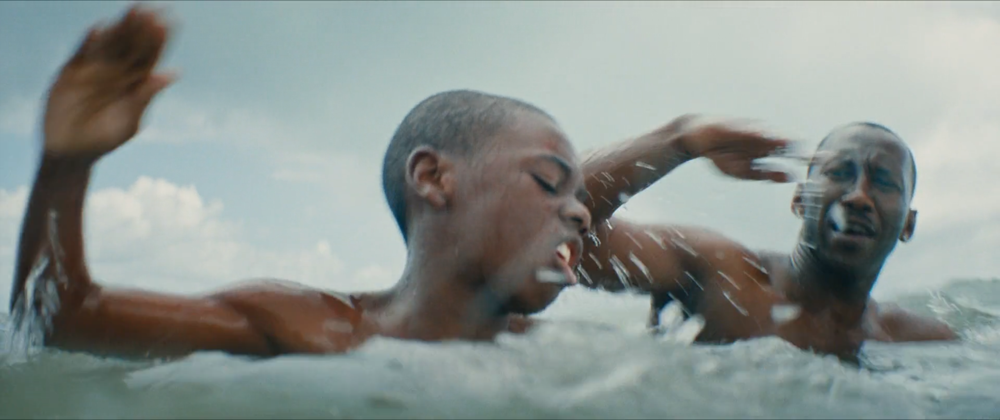
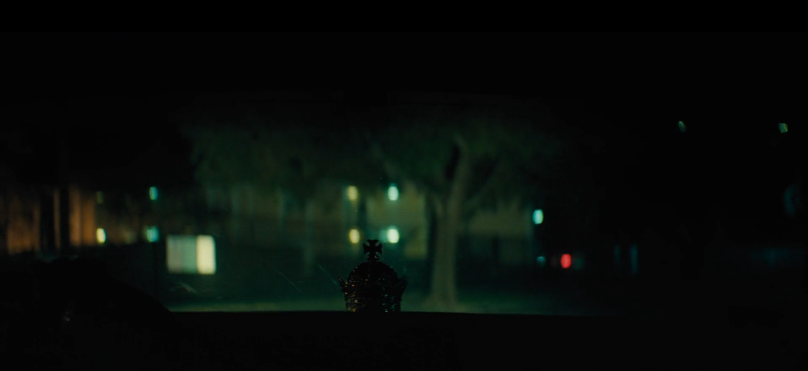
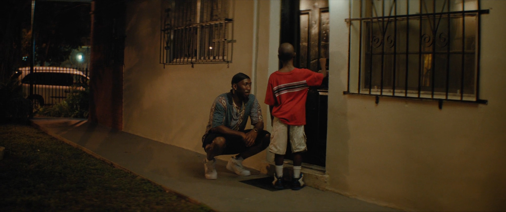
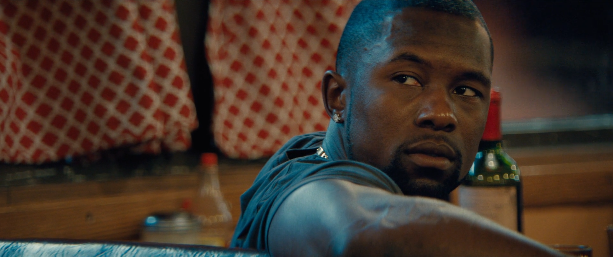

Films sometimes can transcend the medium to champion their characters. Barry Jenkins’ masterpiece Moonlight (2016) follows the life of Chiron across three acts as he navigates and comes to terms with his difficult home life, sexuality, and self-identity. The first act, “i. Little,” introduces Chiron as Little (Alex R. Hibbert) being rescued by Juan (Mahershala Ali) from a group of bullies. Juan and Teresa (Janella Monáe) begin to spend more time with and care for Little as they discover more about his home life with his mother Paula (Naomie Harris). The second act, “ii.Chiron,” picks up with Chiron (Ashton Sanders) as a teenager in high school, Juan has passed away and his home life has deteriorated with his mother. Through his relationship with Kevin (Jharrel Jerome), Chiron makes some progress in his self-identity in this act, but this progress is halted or frozen when Chiron gets sent to juvenile detention after a fight involving Kevin and a group of bullies. The third act of the film, “iii.Black,” introduces Chiron (Trevante Rhodes) as an adult who now strongly resembles the character we saw of Juan in act one. This act brings Chiron’s arc across the film to liberatory catharsis, as the progress that was frozen in act two is allowed to blossom in the final scenes of the film. In Moonlight, director Barry Jenkins purposefully replicates and reshapes previous elements, objects, characters, and ideas in the film as motifs. The emphasis of Jenkin’s use of these returning motifs portray Chiron's evolution into a reflection of Juan's character as Black, how his relationship with Kevin facilitates his discovery of his true self, and how the three characters synthesize into a transcended Chiron by films end.
One of the recurring motifs in Moonlight is the shifting melody that plays throughout the film and acts as a metaphor for the development and connectedness of Chiron’s life. The theme changes slightly across the three acts of Chiron’s life while maintaining the same mood and connection to the original melody. This sustained mood, created by the melodies, ties different moments of Chiron’s life together, while creating a throughline from the start of the film to his eventual complete self. The nondiegetic theme wells up throughout the film during transformative moments of Chiron’s life. These moments include when Chiron rides in Juan’s car the first time, when Juan takes Chiron home for the first time, as Juan teaches Chiron to swim at the beach, before Juan confronts Paula on the block, before Chiron talks to Kevin about detention, as Terrell (Patrick Decile) picks Chiron for Kevin to fight, before Kevin calls Black, and finally as Black looks to the sea before going into Kevin’s apartment. Each of these moments, highlighted by the film’s theme, represents a pivotal instance of character development for Chiron, the most essential of which is the day at the beach with Chiron and Juan.
 Moonlight (2016) 00:18:40The scene of Juan teaching Chiron to swim during their day at the beach, specifically the shot at 00:18:38-00:18:46, is one of the most instrumental in the film in that it explicitly demonstrates and foreshadows how Black will come to resemble Juan in the third act. In this eye level shot, a young Chiron is situated slightly in the foreground taking up the left section of the frame, while Juan, the focus of the camera and Chiron, goes from right of frame to center frame as the camera pans away and around them. The film cuts from the previous shot as the camera dips below the water level, showing the two mirroring each other’s movements, stroking arm over arm as Juan coaches and cheers Chiron along saying, “More athletic. There you go…there you go”. Chiron turns to face Juan, surrounded around and above by the washed-out cloudy sky, and below by the shifting blue-green ocean waves. Moonlight is filled with eye-level shots attempting to show characters as they are, their true natures and perspectives, by metaphorically and cinematically meeting them where they are. This shot cinematically demonstrates the way Juan becomes a beacon of sorts for Chiron to idolize, where his mom and the bullies dehumanize him by calling him the F-slur, Juan treats him with respect and dignity. Juan tells Little, “Nah, at some point you gotta decide for yourself who you gon’ be, Can’t let nobody make that decision for you” (00:20:51-00:21:08). To young Chiron, this eventually leads him to become his own iteration of Juan named “Black,” inspired by the theme of Juan’s nickname “Blue” from the Cuban woman in Juan’s story.
 Moonlight (2016) 01:08:36By the third act, Black develops into a version of Chiron that echoes Juan, as conveyed by the framing of distinct eye level shots across the film’s runtime. The opening shot after the title card “iii. Black” at 01:08:36-01:08:59, is another crucial shot that explicates the transformation of Black’s resemblance to Juan. In another eye-level shot, the camera pans from the crown on the dashboard of Black’s car to the left so that Black takes up the left side of the frame while the crown now rests on the right side of the frame. The final orientation of the crown and Chiron in this shot resembles the beginning of the swimming shot in that Chiron is on the left and the crown representing Juan is on the right. This motif of placement within a frame suggests a strong correlation between Black and Juan and how Juan is still influencing him as an adult. This shot also strongly recreates motifs from the shot 00:07:15-00:07:59, such as replicating the backseat perspective, and the crown on the dashboard. The similarities with these shots also demonstrate how Black, growing up idolizing Juan, has completely matured into a version of Juan, as an adult. Specifically, the crown on the dashboard of both shots, the two men’s earrings, doo-rag caps, and the panning and jostling camera build an atmosphere connecting the characters and moments to each other across the film. Black is depicted having created a life strikingly similar to Juan by act three through his actions such as “trapping” as a drug dealer in Atlanta, mimicking Juan’s mannerisms, physicality, confidence, affability, and owning similar possessions like his car and “fronts”. This characterization of Black within Moonlight prepares him to reconnect with Kevin (André Holland) for the final bend in his arc of self-realization.
 Moonlight (2016) 00:22:00In the first act, Juan nurtured Chiron’s growth by showing him honesty and respect, such as when he teaches him the meaning of the F-slur and told him it is okay if being gay is his sexuality and self-identity. In the Moonlight style of reusing motifs, Kevin induces the same change in Chiron through his honesty and vulnerability in all three acts. For instance, in the eye level shot at 01:33:27-01:33:40, Black is looking at the door from the previous shot, possibly considering leaving, just as Kevin steps into the frame at 01:33:37, both breaking his line of sight with the door and blocking his exit. Throughout the sequences at the diner where Black visits Kevin as an adult and in the rehab center with his mom, flashes of Little come back in Black’s character. The introduction of Kevin into the adult life Chiron has built visibly causes him to start speaking less, act more reserved, and in a way, display vulnerability. These interactions force Chiron to look inward at his self-identity after being confronted with Kevin, and his dreams from the night of the call. Black, now having the confidence and assertiveness of Juan, and now that Kevin has catalyzed his path to self-acceptance and discovery, reaches closure and forgiveness with his mother over his difficult home life as a child.
 Moonlight (2016) 01:35:24Through the prisms of Chiron’s relationships and interactions with Juan and Kevin, he is crystalized into his true self by the film’s end. In one of the last moments at the diner, Chiron evolves into an amalgam of himself, Juan, and his self-identity from Kevin, born from the love in his relationships with both Juan and Kevin. Black’s reflection of Juan gives Chiron the self-confidence to re-examine his self-identity and feelings toward Kevin by the end of the film. In the frame 01:35:24, Chiron is reconstituted by Kevin’s song “Hello Stranger”. Black’s back and left figure is painted in the mise-en-scene in this eye level shot by the blue neon lights from the window to his left. As Black sits facing the entrance to the diner as Juan taught him, but turned to face Kevin, the lighting and framing demonstrate how the character of Chiron is now fully realized through both influences. Chiron is now not merely a version of “Black” or “Blue”, but a transcended character built from the aspects of Black and Juan and Kevin that is wholly Chiron. This growth and catharsis allow Chiron to later validate his homosexuality, internally, in the affirming presence of Kevin in the third to final shot of the film (01:45:31-01:45:40). The eye level camera rests on Chiron as he breathes through and takes in the affirmation displayed by Kevin in this last point-of-view shot.
Moonlight is a masterpiece among character pieces, which dwells on self-discovery and acceptance. Jenkin’s repeated callback to previous motifs build upon and expand their meaning as the film, and Chiron, grow and develop. Chiron transcends into his true self through his relationship and love with Juan and Kevin by the end of the film. This cathartic self-discovery is also entangled in the repeated way Kevin interacts with Chiron, much like Juan does, with love and honesty, treating him as himself and a whole person. The film emphasizes Juan’s influence on Chiron, as well as Kevin’s ability to inspire self-confidence, through repeated musical scores, camera angles, and deliberate shot compositions. Chiron’s character is fully realized as the young Chiron is bathed in the moonlight of the final shot, again calling back to Juan’s story in Cuba and Chiron’s encounter with Kevin on the beach (01:46:01-01:46:24). Everywhere in Moonlight, recurring motifs and character developments work to build a cohesive film world and narrative for Chiron to flower within.
Moonlight. Directed by Barry Jenkins, performances by Mahershala Ali, Trevante Rhodes, Naomie Harris and Ashton Sanders, A24, 2016.